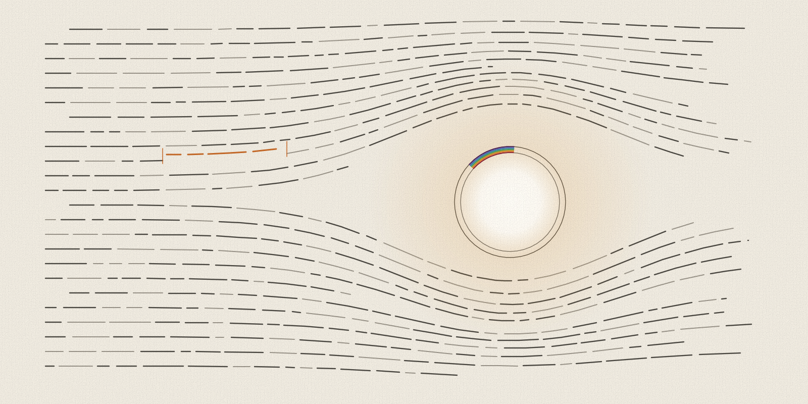

Articulate
A writing checker that runs on your own computer.

In short
Articulate checks prose for named patterns such as hedging, filler words and stock phrases, and tells you the line each one is on. It is for writers, editors and teams who want those checks in a terminal, an editor or CI. The checks run on your own computer. This site checks its pages with it.
Install it · How it works, animated · Source on GitHub · PyPI
What it is
Articulate is prose analysis and model-assisted editing for the command line, editors and CI. It names each writing pattern it finds and the line it is on, in the terminal, in an editor through its language server, or as SARIF in code review.
Each check runs in a writing mode, such as a memo that argues a case or technical documentation that explains. The mode sets which patterns count and how strictly. Fiction, memoir, screenplays and poetry each get their own mode, and a character's quoted line is never scored as the author's prose.
Markdown is read as Markdown. In release 0.14.0, masking table separator rows removed 5,123 findings on those rows across 3,000 files and added none.
Install and run a check
pip install articulate-writing
articulate check notes.md --mode technical-docs/explain --gatearticulate modes lists the modes. With --gate, the command exits with 1 when the text is blocked, so a script or a CI job can stop on it. The core needs only Python's standard library.
One example check
This sentence went in:
It is important to note that this release really represents a significant step forward. Arguably, the new cache could potentially make builds faster in many cases.
Articulate blocked it with four findings. Each finding also prints the line it came from, cut here for width.
[articulate] notes.md [technical-docs/explain]: 1 high, 3 medium (blocked) texture 0/100
L1 [HIGH filler-intensifier] genuinely / really / truly / actually
L1 [MEDIUM throat-clearing] throat-clearing opener
L1 [MEDIUM hedge-stack] stacked hedge
L1 [MEDIUM throat-clearing] worth-noting preambleA rewrite that names the change and gives a number passes the gate. The numbers are made up for the example.
This release adds a build cache. On our test project, a clean build took 41 seconds and a cached build took 9.
[articulate] notes.md [technical-docs/explain]: unverifiable (below the signal floor) texture 0/100The command exits with 0. This output is from Articulate 0.4.1.
Using findings
A finding names a writing device. It says nothing about who wrote the text, so never use one to accuse a person of using AI or to grade a student. The test results on texts of known origin show why: human authors such as Darwin and Melville are flagged too.
Editing
Three tools rewrite prose. Judge names problems a pattern rule cannot see, such as a claim with no position behind it. Fix rewrites a passage and checks its own result. Polish repeats until the prose clears a bar for concreteness and economy. They run through articulate-mcp, the MCP server that comes with the package, and send the draft to a hosted model through the claude command-line tool (Claude Code).
In an editor, the articulate-lsp server shows findings inline in any editor that speaks the Language Server Protocol, such as VS Code, a JetBrains IDE or Neovim.
Releases
Release notes are on GitHub, and the upload history is on PyPI. The system map shows where Articulate sits among the other tools.